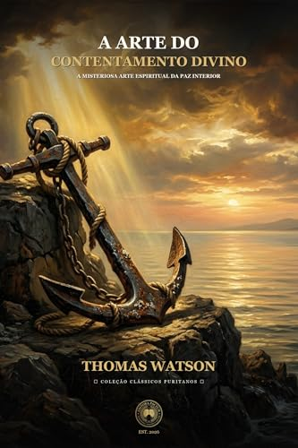

Vivemos em uma época dominada pela ansiedade endêmica, pelo consumismo desenfreado e pelo descontentamento perpétuo. As redes sociais e a cultura moderna alimentam constantemente a ilusão de que a felicidade reside sempre no próximo bem a ser adquirido, na próxima promoção ou na ausência total de desconforto. Há quase quatro séculos, porém, o pregador puritano londrino Thomas Watson (c. 1620–1686) ofereceu o remédio definitivo para essa doença da alma em seu clássico imperecível: A Arte do Contentamento Divino.
1. A Definição Bíblica de Contentamento
Partindo do célebre texto do apóstolo Paulo em Filipenses 4:11 — “Digo isto, não por causa da pobreza, porque aprendi a viver contente em toda e qualquer situação” —, Watson começa desmistificando o que o contentamento não é:
- Não é insensibilidade estoica: O cristão não é uma estátua de mármore que não sente a dor do luto, da doença ou da penúria financeira. Jesus chorou diante do túmulo de Lázaro e no Getsêmani;
- Não é resignação fatalista ou apatia: O crente pode buscar legitimamente meios dignos para melhorar sua condição material;
- Não é desleixo espiritual: O cristão nunca deve estar satisfeito com o seu nível atual de graça e santidade, ansiando sempre por crescer à semelhança de Cristo.
O que é então o verdadeiro contentamento cristão? Nas palavras imortais de Watson:
“O contentamento é uma disposição doce, santa e interior da alma, que se submete e se deleita livre e pacientemente na providência sábia e paternal de Deus em todas as condições terrenas.” — Thomas Watson, A Arte do Contentamento Divino
2. Por que o Contentamento é Uma "Arte"?
Paulo não escreveu "nasci contente", mas "aprendi a viver contente". O contentamento é uma arte celeste aprendida na escola do Espírito Santo, contrária a todas as inclinações naturais da carne decaída.
O ser humano natural é por definição uma fornalha de murmuração. Se Deus lhe concede riqueza, ele teme perdê-la; se lhe dá pobreza, ele acusa Deus de injustiça; se há saúde, ele a gasta em vaidades; se vem a enfermidade, ele desespera. Watson demonstra com maestria psicológica que a insatisfação humana nunca é um problema de circunstâncias exteriores, mas de um coração interiormente não reconciliado com a vontade de Deus.

A Arte do Contentamento Divino
Thomas Watson disseca Filipenses 4:11 com beleza retórica incomparável, ensinando a alma atribulada a transformar aflições em pérolas de crescimento e paz inabalável na soberania de Deus.
3. Os Remédios Puritana para Curar a Murmuração
Como um médico experiente da alma humana, Thomas Watson prescreve poderosos argumentos teológicos que desarmam o veneno da murmuração:
A. A Consideração do Que Realmente Merecemos
O cristão que tem uma visão correta de seu pecado sabe que a única coisa que realmente merece por justiça estrita é o julgamento eterno. Portanto, qualquer fôlego de vida concedido aquém do inferno é uma misericórdia imerecida. Como escreveu o profeta: “Por que, pois, se queixa o homem vivente? Queixe-se cada um dos seus próprios pecados” (Lamentações 3:39).
B. O Deus da Aliança como Nossa Porção Infinita
Se temos a Cristo, possuímos o Criador do universo como nosso Pai, Redentor e Amigo. Uma pessoa que possui uma herança de bilhões de dólares preocupar-se-ia por ter perdido uma moeda de dez centavos na rua? Ter a Cristo e queixar-se de falta de coisas terrenas é cometer a insensatez de considerar a criatura mais valiosa do que o Criador.
C. A Medicina Amarga da Providência
Watson usa uma belíssima metáfora médica: quando um médico receita um xarope amargo a um paciente enfermo, ele não o faz por ódio, mas para curá-lo da doença fatal. Deus frequentemente remove nossos brinquedos terrenos para nos livrar do apego ao mundo e nos preparar para as delícias imorredouras do céu.
Conclusão: O Segredo de Uma Alma Serena
O contentamento não empobrece o homem; ele o enriquece infinitamente. O homem mais rico da terra não é aquele que tem mais posses acumuladas nos celeiros, mas aquele que deseja menos as vaidades deste século passageiro, porque seu coração já está plenamente saciado na glória de Deus.
A edição integral de A Arte do Contentamento Divino da Editora Pactum preserva todo o vigor retórico e a beleza literária de Thomas Watson, sendo uma leitura obrigatória e revigorante para todo cristão que deseja triunfar sobre a ansiedade e desfrutar da paz que excede todo o entendimento.